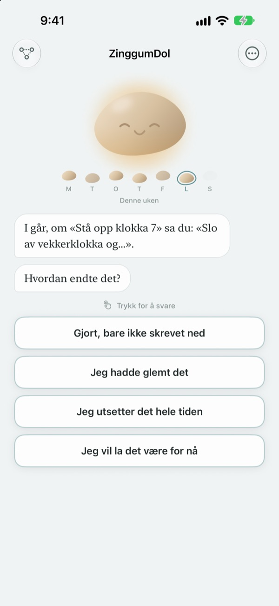
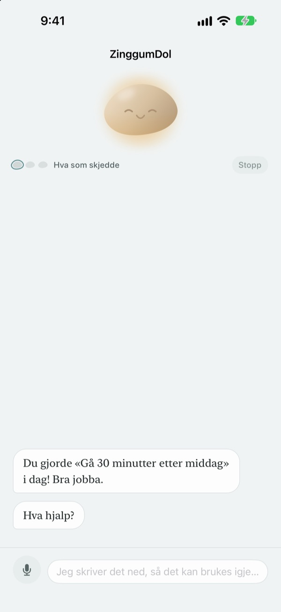
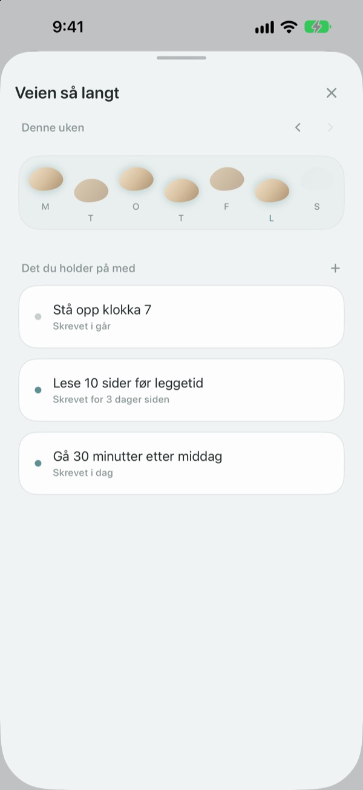
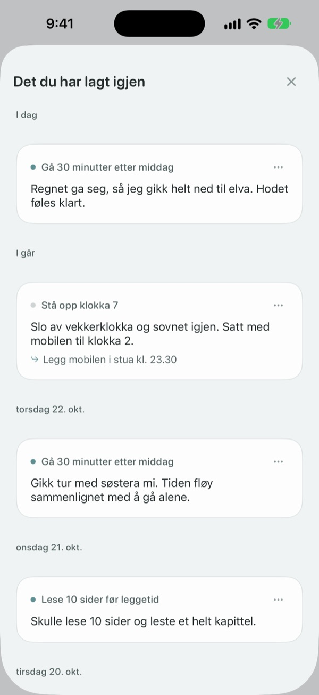

Et feiltrinn betyr ikke
at du har falt i bekken
Den dagen du bommer på målet, er det steinen som snakker først. Den spør hva som skjedde, ikke hva du gjorde feil, og gir deg det som skjedde og følelsen tilbake hver for seg.
Samtaler, notater og veien din er gratis. Ingen konto, ingen reklame.

Snakk med steinen
Du skulle gå en kveldstur i dag, men det ble ikke noe av. Trykk på et svar eller skriv ditt eget, så svarer steinen akkurat som i appen.
Klandrer du deg selv når en dag går skeis?
Kvelden du hoppet over treningen, er den første tanken ofte «hva er galt med meg?». Ser du nærmere etter, var det overtid, det regnet, og du var helt tom. ZinggumDol spør i hver sin runde hva som skjedde og hvordan du har det, og legger de to ved siden av hverandre. Når du ser at det var omstendighetene og ikke viljen din, er det lettere å finne neste lille steg.
Steinen snakker først
Sett et mål, så holder steinen øye med dagene det gikk og dagene du sto fast. Når en dag glipper, spør den «hva skjedde?» i stedet for «hvorfor ikke?», og den husker hva du fortalte sist.
På dager der det blir for mye å skrive, kan du bare si det høyt. Tale gjenkjennes på enheten, og opptak lagres aldri.

Dagene dine som trinnsteiner
Hver uke ligger som en rad med steiner. Dagene du ikke tråkket på, blir også liggende; ingenting slettes.
Selv med et hull eller to ser du at veien fortsetter.

Les det du skrev på nytt
Hva som skjedde, hvordan du hadde det og hva du vil prøve neste gang, samles etter dato. Les en dag der du sto fast på samme måte, og se hva som hjalp.
En widget viser et ord fra steinen på Hjem-skjermen, og en påminnelse på tidspunktet du velger, inviterer deg til å se tilbake på dagen.

Tre steg for å komme i gang
- 1
Skriv ned ett mål
For eksempel «Gå 30 minutter etter middag».
- 2
Åpne appen på slutten av dagen
Steinen spør hvordan dagen var. Med en påminnelse glemmer du det ikke.
- 3
Trykk eller skriv svaret ditt
Du kan stoppe når som helst med
Jeg vil la det være for nå.
Slik går en samtale
- Hva som skjedde
- Bare fakta: hva som kom i veien
- Følelse
- Hvordan du har det akkurat nå, på en skala med fem trinn
- Se tilbake
- Steinen gir deg det som skjedde og følelsen tilbake hver for seg
- Neste steg
- Du velger selv noe lite, fem minutter holder
- Avslutning
- På en skikkelig tung dag spør den ikke om mer og foreslår hvile
Du kan stoppe når som helst, og det du har sagt så langt, blir lagret.
Samtaler og notater er gratis. Pro hvis du vil ha mer.
Gratis
- Alle samtaler med steinen
- Opptil tre mål
- Snakk i stedet for å skrive
- Veien din og alt du har skrevet
- Widget og daglig påminnelse
- Lås med kode
ZinggumDol Pro
- Så mange mål du vil
- Velg mellom seks steinoverflater
- Eksporter notater som tekstfil
Kjøp én gang og behold. Ikke abonnement.
Det dukker aldri opp en betalingsskjerm midt i en samtale. På en ny enhet eller etter reinstallering trykker du på Gjenopprett kjøp i Innstillinger.
Vanlige spørsmål
Må jeg forklare hver dag jeg bommer?
Nei. Trykk på Jeg vil la det være for nå når som helst, så slutter samtalen der. Det du har sagt, blir lagret, så du kan fortsette senere.
Jeg gjorde det, men appen sier at jeg ikke gjorde det.
Trykk på Gjort, bare ikke skrevet ned. Steinen tar imot rettelsen og spør i stedet hva som hjalp. Det som virket, blir lagret og kommer fram igjen neste gang du står fast.
Hvor blir det av det jeg sier høyt?
Talen din blir til tekst på enheten, og opptaket lagres aldri. På støttede enheter blir setningene også pusset litt så de er lettere å lese, også det på enheten.
Hvor mange mål kan jeg ha?
Tre gratis. Når du er ferdig med et mål, bruker du Slipp under Veien så langt for å frigjøre en plass. For flere enn tre trenger du ZinggumDol Pro.
Er ZinggumDol Pro et abonnement?
Nei. Du betaler én gang og beholder det. På en ny enhet eller etter reinstallering trykker du på Gjenopprett kjøp i Innstillinger.
Kan noen andre lese dagboken min?
Det finnes ingen konto. Notatene dine ligger bare på enheten din og i din egen iCloud, og du kan låse appen med en kode i Innstillinger. Det du skriver, sendes aldri til utvikleren. Anonym bruksstatistikk kan du slå av i Innstillinger.
Hvordan endrer jeg tidspunktet for påminnelsen?
Under Daglig påminnelse i Innstillinger slår du den av eller på og velger tidspunkt.
Minner steinen meg på det som gikk bra?
Ja. Den husker hva som hjalp deg, og på en tung dag minner den deg om noe du nylig fikk til.
Hvordan sletter jeg alt?
Trykk på Slett alle notater i Innstillinger. Målene og notatene forsvinner for godt, også på andre enheter som synkroniseres via iCloud. Innstillinger og kjøp blir værende. Med Pro kan du først ta vare på en kopi med Eksporter notater.
Hvordan kontakter jeg dere?
Via «Send tilbakemelding» i appens Innstillinger, eller send e-post til adressen nedenfor.
Spørsmål eller tilbakemeldinger? Skriv til leeo@kakao.com.